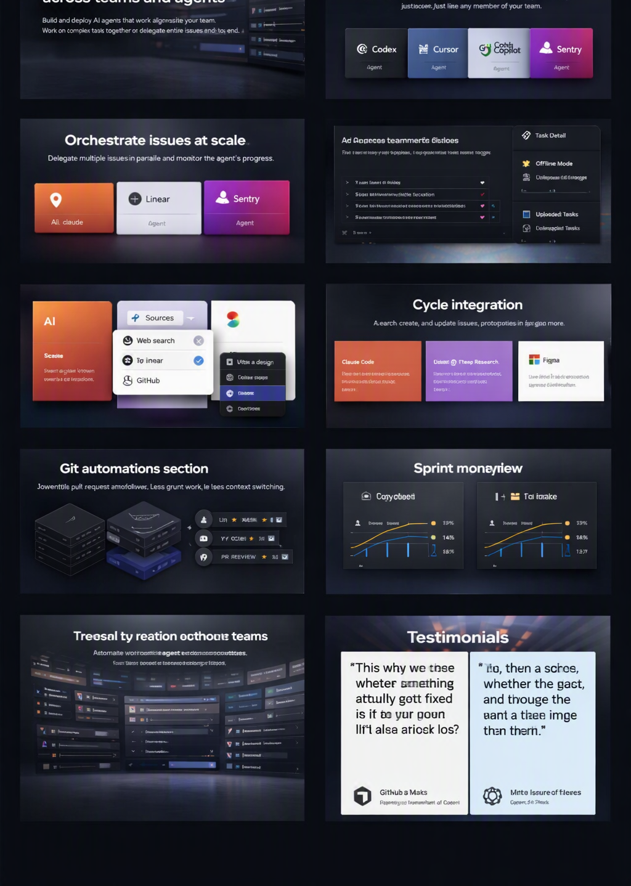
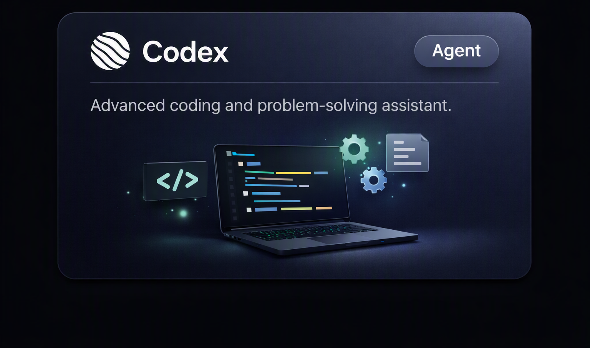
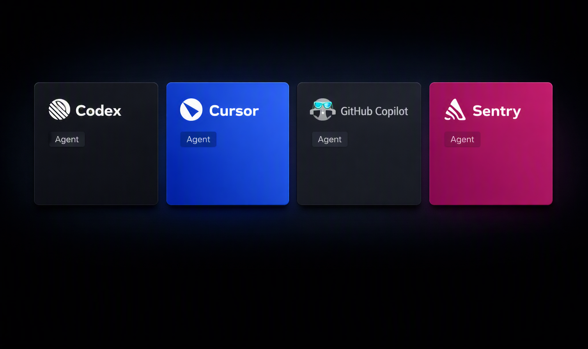
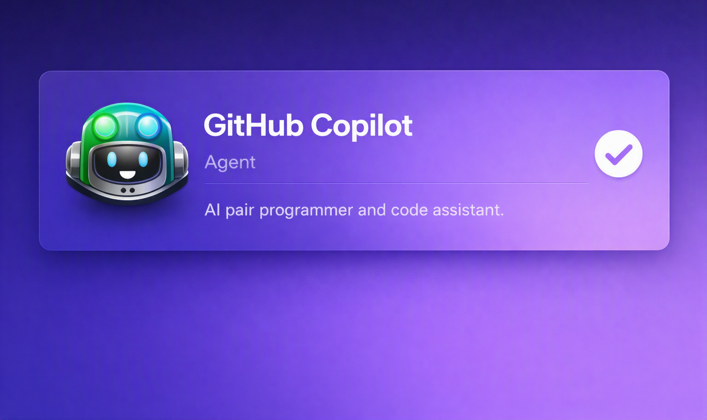
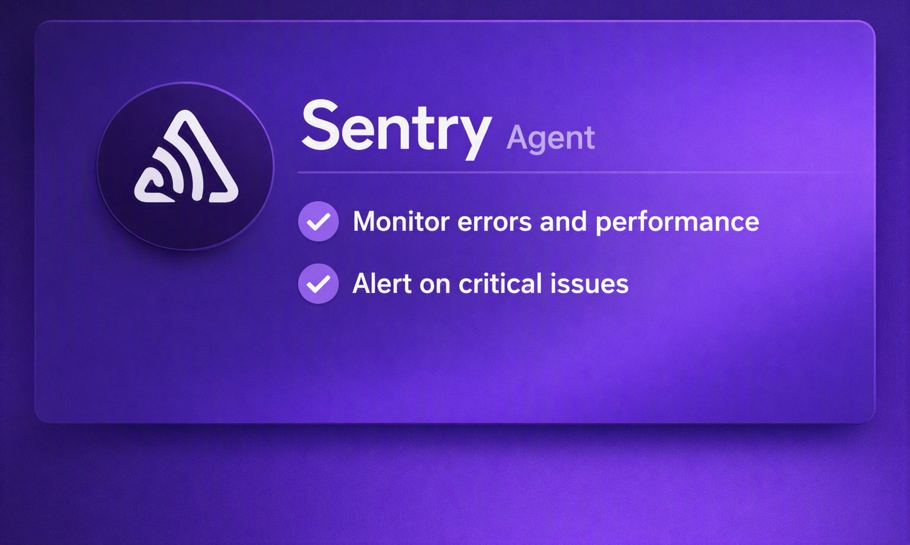
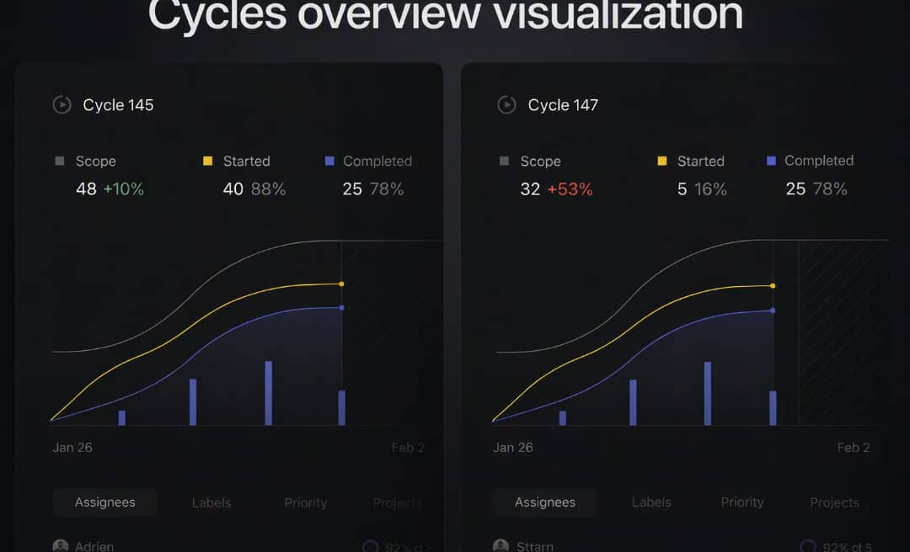
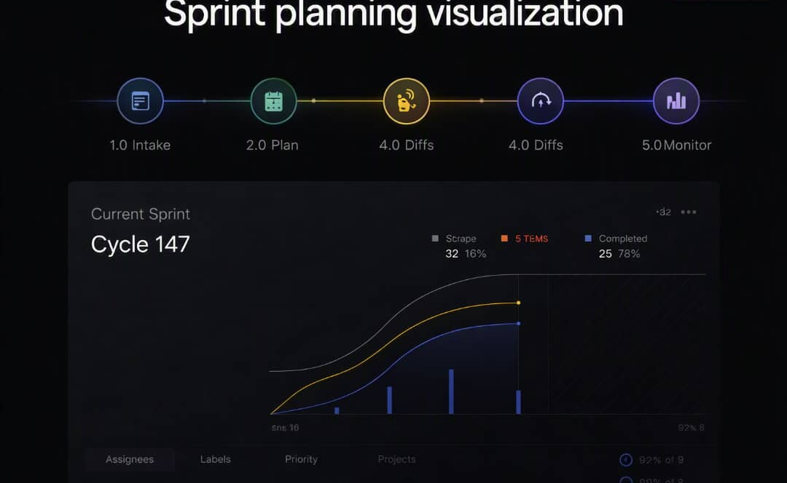
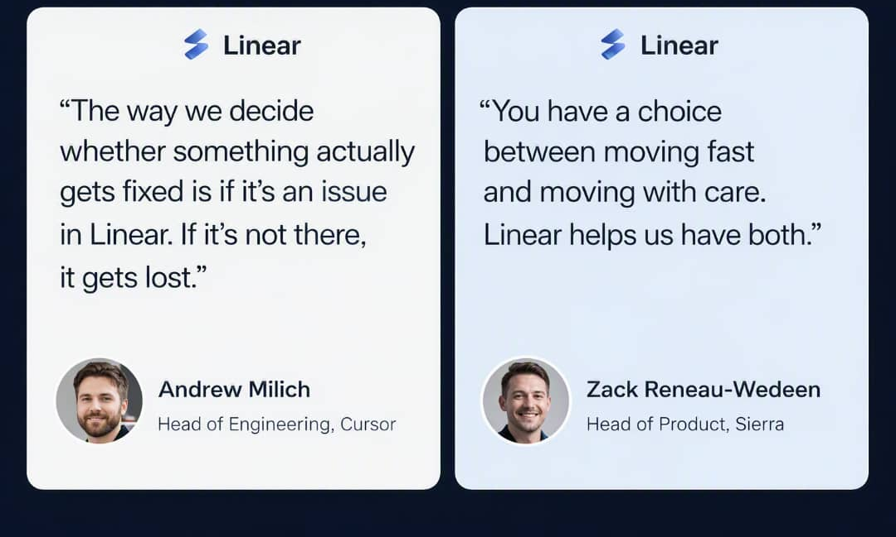
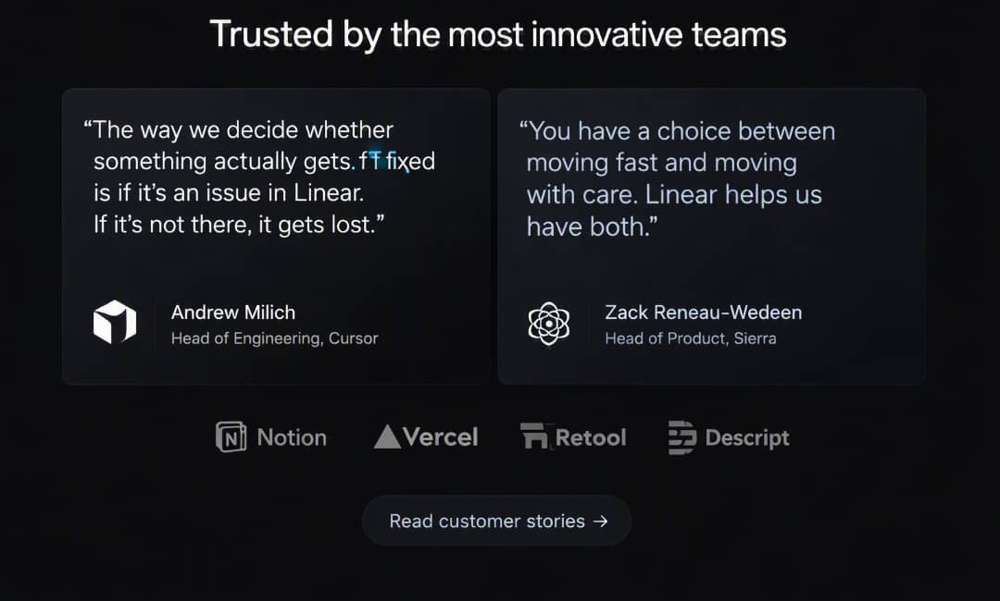

Move work forward across teams and agents
Build and deploy AI agents that work alongside your team. Work on complex tasks together or delegate entire issues from start to finish.

Artificial teammates. Natural collaboration.
Linear is built for multiplayer work with AI. You can assign agents to any issue and mention them in comment threads, just like any other member of your team.




Orchestrate issues at scale
Delegate multiple issues in parallel and monitor the agent's progress.
Show last known vehicle location
When network connectivity is unavailable, render the last known vehicle location.
- ✓Track offline states
- ✓Delegate to AI agents
- ✓Monitor progress in real time
Offline Mode
Render last known location when disconnected.
Delegated Tasks
Assign issues directly to agents.
Streamline work across tools
Connect your toolstack to Linear via MCP and move work forward from any environment—code, design, or research—without breaking flow.
Learn More
Powerful Git automations
Automate pull request workflows. Less grunt work, less context switching. More focus, more flow.

Build momentum with Cycles
Cycles focus your team on what work should happen next. A healthy routine to maintain velocity and make meaningful progress.

Modern sprint planning, purpose-built for software teams
Cycles are time-boxed periods where a team works on completing a pre-defined set of work. Linear automatically creates upcoming cycles for your team.

What our customers say
Thousands of engineering teams trust our platform every day.

Trusted by modern software teams
Linear powers over 37,000 product teams. From ambitious startups to major enterprises.
Read Case Study